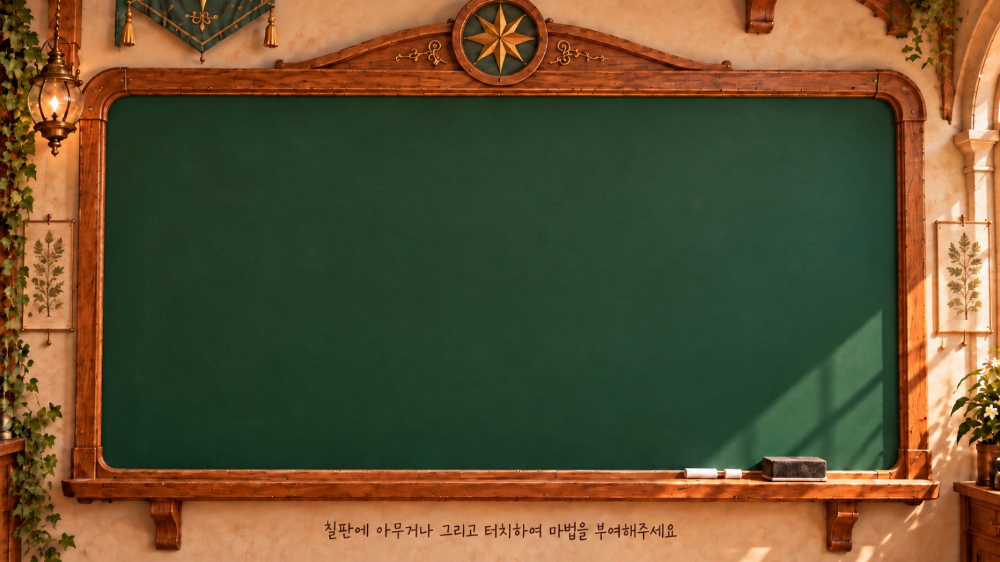
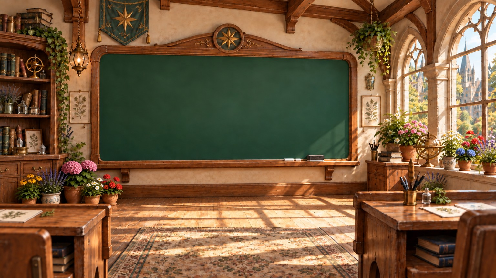

THE LIVING BLACKBOARD
손끝으로 그리는, 작은 생명.
어떤 그림이든 그려보세요. 모든 선이 나비처럼 날갯짓합니다.


TOUCH & DRAW
✧
여기에 자유롭게 그려보세요
그린 선이 날개처럼 접혔다 펼쳐져요02 / 선의 비행햇살이 머무는 교실
이번 실험
분필을 고르고 그림을 시작해보세요.
✦ 마법학교 연결 · v2.0
01 그려요 손가락으로 자유롭게—02 띄워요 선 날려보내기—03 날아올라요 그린 모양 그대로